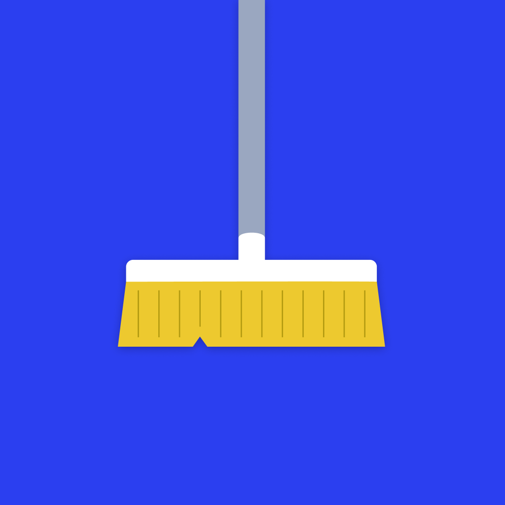

Clean SpaceTerms & Conditions
1. Acceptance of Terms
By downloading, installing, or using Clean Space ("the App"), you agree to be bound by these Terms. If you do not agree, do not use the App.
2. License to Use
We grant you a limited, non-exclusive, non-transferable, revocable license to use the App for personal, non-commercial purposes, subject to these Terms.
3. User Responsibilities
- Maintain the security of your device.
- Back up important files before deleting anything.
- Ensure you have the right to delete items you remove via the App.
- Use the App in compliance with applicable laws and regulations.
4. Data and File Management
Clean Space helps you review and delete items you choose.
- Deletion actions are user-initiated; nothing is deleted automatically.
- Deleting items may be permanent and cannot be undone in the App.
- You are solely responsible for reviewing items before deletion and maintaining backups.
- iOS may not reclaim space until the system clears “Recently Deleted.” On Android, deletion is typically permanent.
5. Disclaimer of Warranties
The App is provided “as is” and “as available,” without warranties of any kind, express or implied, including implied warranties of merchantability, fitness for a particular purpose, and non-infringement. We do not warrant the App will be error-free or uninterrupted, meet your requirements, or that defects will be corrected.
6. Limitation of Liability
To the maximum extent permitted by law, we are not liable for any indirect, incidental, special, consequential, exemplary, or punitive damages, or any loss of data, use, goodwill, or profits, arising from or related to your use of the App, including accidental deletion or failure to reclaim storage. Our aggregate liability will not exceed the amount you paid for the App (if any).
7. Updates and Modifications
We may modify, suspend, or discontinue the App (in whole or part) at any time. We may update these Terms; continued use after updates constitutes acceptance of the modified Terms.
8. Intellectual Property
The App and related materials (software, design, text, graphics) are owned by us or our licensors and protected by law. You may not copy, modify, distribute, or reverse engineer any part of the App except as permitted by applicable law.
9. Termination
We may terminate or suspend your access at any time, including for breach of these Terms. Upon termination, your right to use the App ceases immediately.
10. Governing Law
These Terms are governed by the laws of your country/region of residence, without regard to conflict-of-law principles. Local mandatory consumer protections remain unaffected.
11. Purchases & Refunds
The App is free to download and includes one review session per day. Clean Space Unlimited is an optional one-time purchase, made through the Apple App Store and/or Google Play, that removes that limit. Billing, refunds, and family sharing are governed by the respective store policies. We do not process payments directly.
12. Third-Party Services (Diagnostics & Purchases)
We may use a third-party processor (currently Sentry) to collect and process diagnostic data (e.g., crash logs, stack traces, device/OS, app version) to maintain and improve the App, and a third-party processor (currently RevenueCat) to verify and restore purchases. No media contents are uploaded. Use of such services is subject to their terms and privacy policies.
13. Availability & Requirements
Some features depend on device capabilities, OS versions, and granted permissions (e.g., Photos/Media and Notifications). Functionality may be limited if permissions are denied or if platform APIs change.
14. Contact
Questions about these Terms? Write to saif.osama28@gmail.com.
By using Clean Space, you acknowledge that you have read, understood, and agree to these Terms.